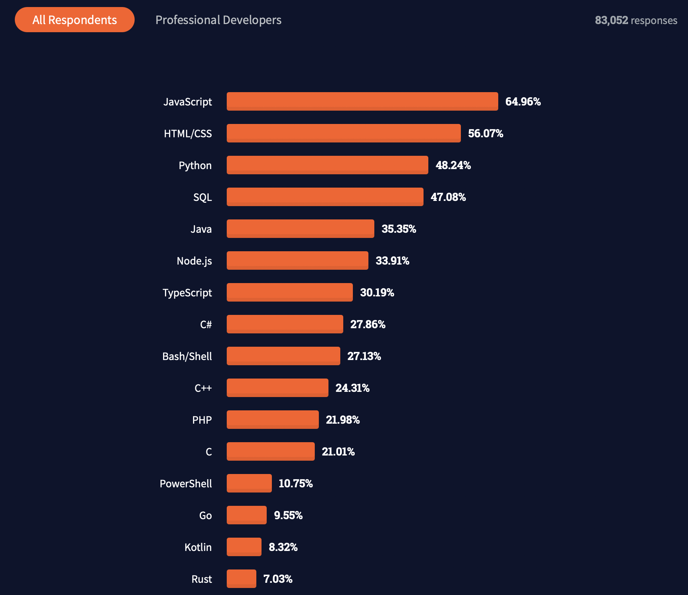

Since our client is inclined towards creating an online accesible web application, it is important for us to ensure that most devices
can support the running of our programme. For creating such web application, we have a few choices of programming languages to be used
to structure our project. After doing our own research, we narrowed down the possible languages to two: JavaScript and Python. However,
after further discussions, our team decided to go forward with JavaScript. The reason why we did not choose Python was because it is a
backend server-side programming language. This being said, Python cannot be utilised on its own because it needs to work with requests
involving HTML, CSS and even JavaScript
[5]. Additionally, even with the existance of frameworks for website development using Python
such as Django available, it will be a steep learning curve for us to easily code using Python. Finally, the performance of websites
created using Python may be poor because of its slower speed in comparison to JavaScript
[6].
On the other hand, JavaScript is generally a more popular choice of programming language used in web development (web-dev). Based on a 2021 survey carried out by
Stack Overflow, out of 83,052 respondents, about 65 percent of them use JavaScript as their main language for web-dev
[7]. As such, it
is easier for us to gain help from the community in case we encounter any problem during development.
Also, JavaScript has the advantage of speed, which is useful to save time of the clinicians using our platform. The image below depicts the
statistics mentioned above
[7].
